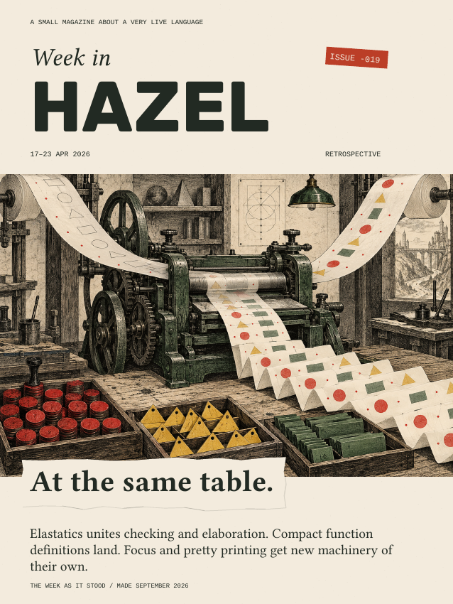
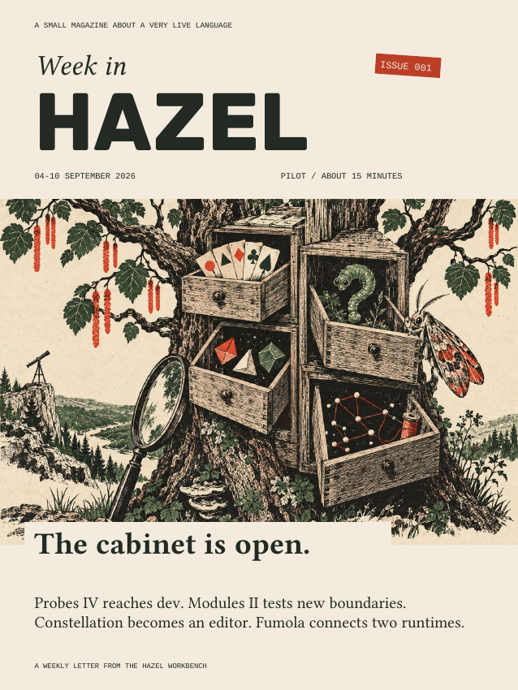
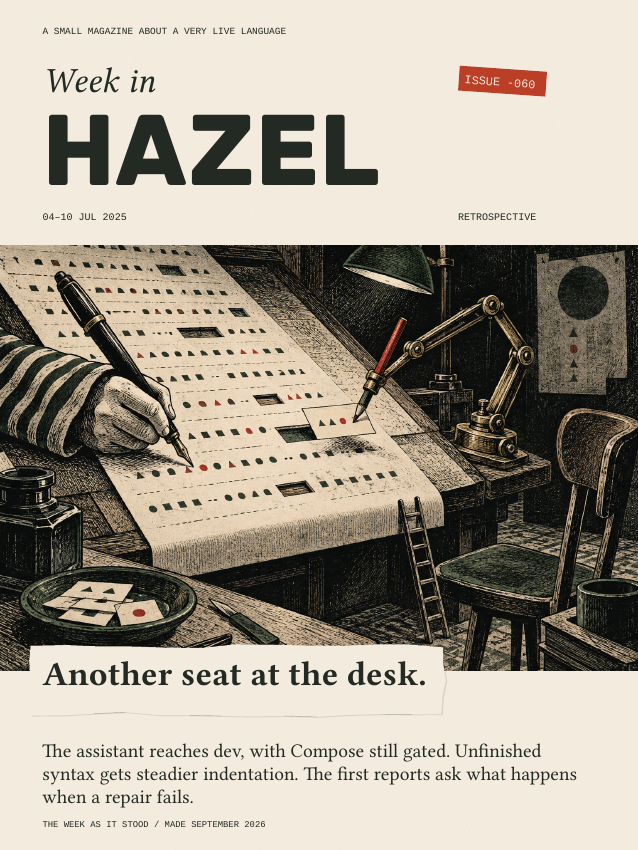
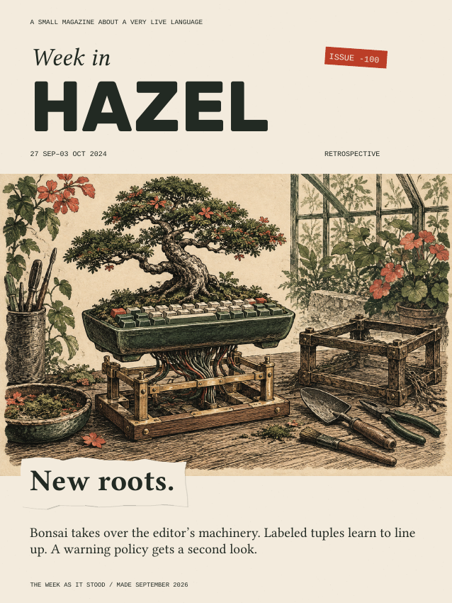

Issue -019
At the same table.
April 17–23, 2026 · 8 pages
Elastatics, compact function syntax, keyboard focus and pretty printing.
A small digest
for the hazelnut community.

September 4–10, 2026 · 11 pages
Probes IV reaches dev. Modules II tests new boundaries. Constellation becomes an editor. Fumola connects two runtimes.
The regular edition, beginning with Issue 001.
Earlier weeks, reconstructed in September 2026.

Issue -019
April 17–23, 2026 · 8 pages
Elastatics, compact function syntax, keyboard focus and pretty printing.

Issue -060
July 4–10, 2025 · 7 pages
The assistant’s arrival, unfinished syntax and the first reports.

Issue -100
September 27–October 3, 2024 · 7 pages
Bonsai takes over the editor’s machinery. Labeled tuples learn to line up.